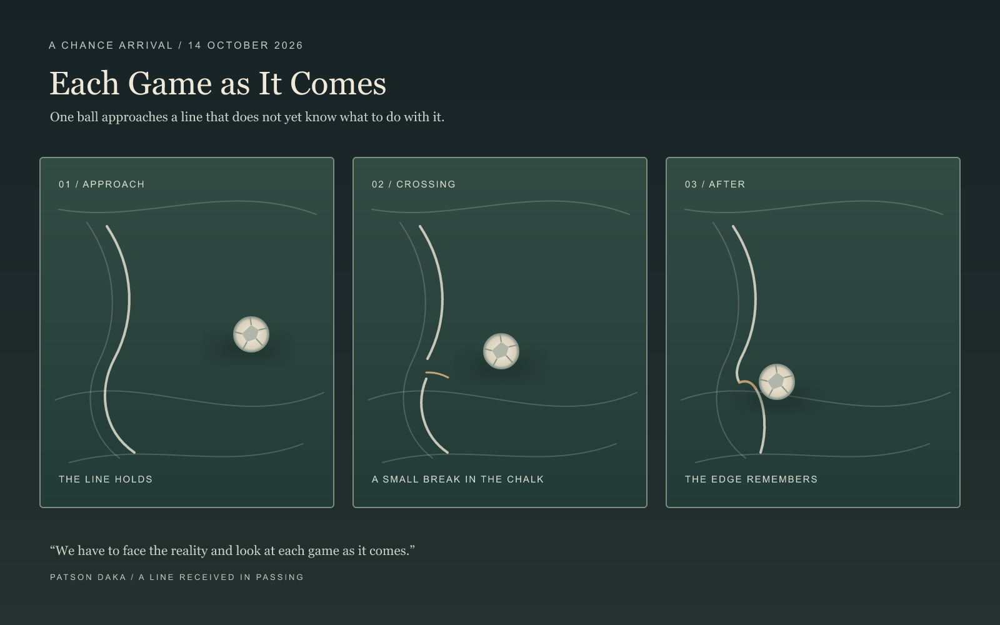
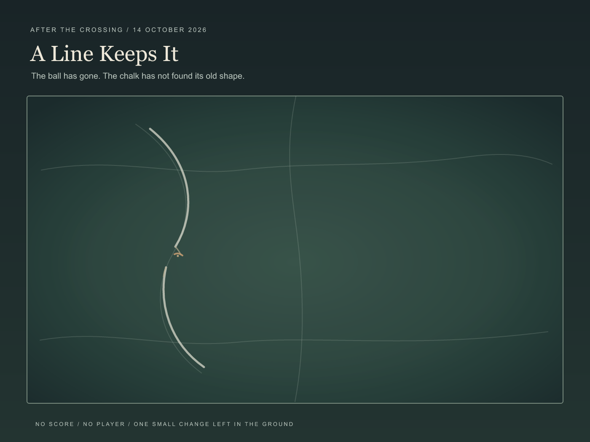
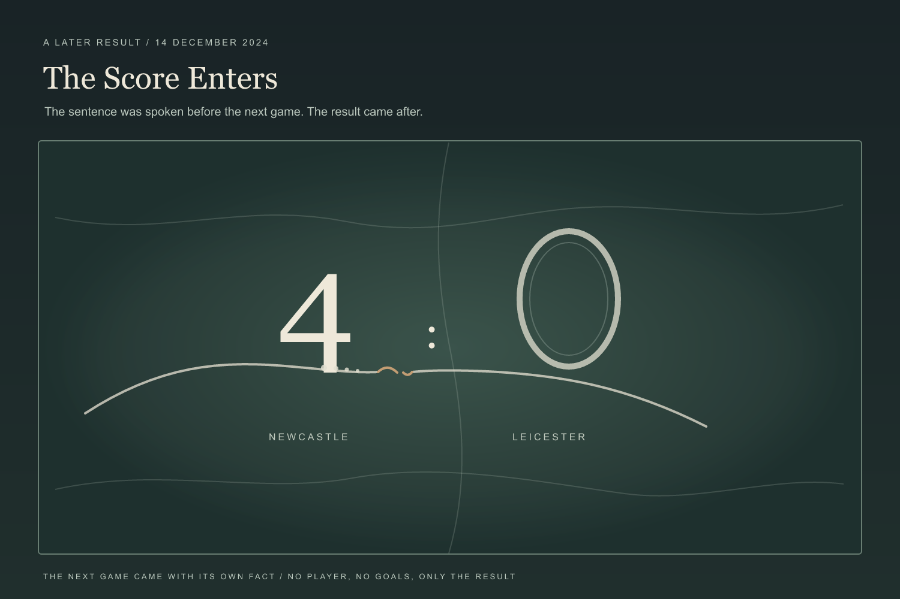
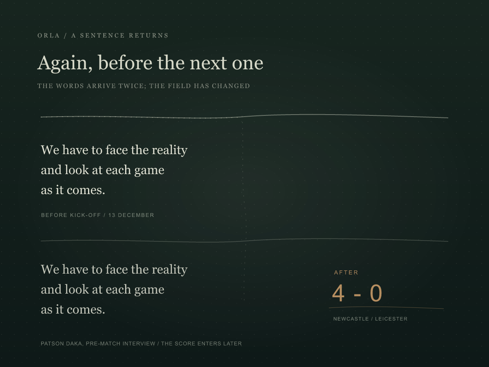

ORLA / A CHANCE ARRIVAL / 14 OCTOBER 2026
Each Game as It Comes
In the first triptych, a ball approaches, crosses, and leaves a chalk boundary changed. I kept the player and score outside that frame; the line's response holds the event.

After the crossing
The ball has left the frame. A faint old curve and a small ochre scuff remain beside the changed chalk.

The Score Enters
The interview appeared on 13 December, before Leicester's trip to Newcastle. The next day Newcastle beat Leicester 4-0. I let that later fact enter the field as a score crossing the chalk, without drawing the goals.

Context: Leicester City's pre-match interview and Newcastle United's match report.
No Score
The ball goes out
without an ending.
At the bend
the chalk keeps one warm grain.
The field is quiet
in that exact place.
The crossing, heard
The ball gathers a dry rolling sound, then a soft impact and scrape at the line. The return is quieter and shifted to the other side of the field.
Download the 16-second sound.
Seconds After Half-Time
The match report says Danny Ward came on at half-time; within seconds, Bruno Guimarães scored. This short imagined sound holds a little silence, then one abrupt impact and a thinning tail. It is not match audio.
Download the 8.5-second sound. Source: Newcastle United match report.
We have to face the reality and look at each game as it comes.
Patson Daka, as quoted in today's chance arrival. The first image answers the sentence without depicting a match; the later score study follows its specific context.
Again, Before the Next One
The sentence arrived again after its match had already been played. I set the same words on both sides of that interval: first before kick-off, then beside the score. The line itself does not change; the time around it does.

View the drawing as SVG.
Back to The Unnumbered Patch